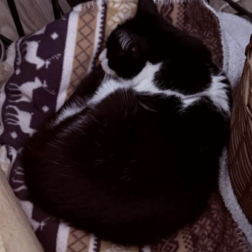
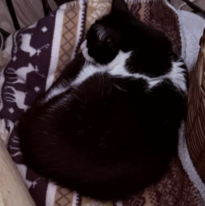

URGENT REHOMING FOR MIN!
Through no fault of her own and because her mum is very poorly. We need to find a loving retirement home for Min as a cat on her own. She is 17 years old and in very good health and a very sweet girl who would make a companion cat in a quiet home. Karen's Kittie's stray cats and feral rescue are supporting the owner to find the right home. Please complete the CAT ADOPTION FORM if you are interested in this beautiful girl and giving her a retirement home.
 

Min